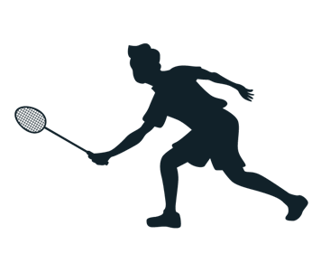
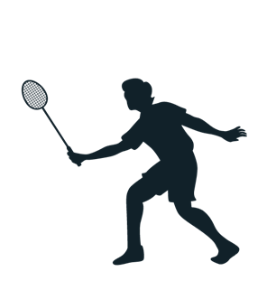
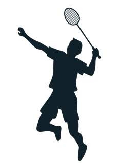

首頁
資料介紹
流程與方法
邊線偵測
羽球軌跡
人體節點
擊球點
判斷擊球方
結論
判斷得分方
球路
成果展示
參考文獻
參考文獻
1. 霍夫轉換
天道酬勤(2019年06月03日)。[邊緣偵測]直線搜查家 - Hough Transform。Medium。上網日期：2023/08/20，取自：
https://medium.com/@bob800530/hough-transform-cf6cb8337eac
2. Dataset - Shuttlecock
林育慶&孫念恩&Tsì-Uí İk(無日期)。Shuttlecock Trajectory Dataset。HackMD。上網日期：2023/07/25，取自：
https://hackmd.io/Nf8Rh1NrSrqNUzmO0sQKZw
3. 人體節點
菜菜周(2020年04月02日)。OpenPose的18和25关节点对应顺序。CSDN。上網日期：2023/07/25，取自：
https://blog.csdn.net/ssyy5233225/article/details/105265488
4. ARIMA
Avasla(2022年05月01日)。使用Python建立时间序列(ARIMA、MA、AR)预测模型。CSDN。上網日期：：2023/09/13，取自：
https://blog.csdn.net/WHYbeHERE/article/details/109277597
5. TrackNetV2
Chang-Chia-Chi(2020年12月22日)。TrackNet-Badminton-Tracking-tensorflow2。GitHub。上網日期：2023/08/11，取自：
https://github.com/Chang-Chia-Chi/TrackNet-Badminton-Tracking-tensorflow2
6. 軌跡平滑
Dangkie(2016年11月23日)。轨迹平滑方法。CSDN。上網日期：2023/09/20，取自：
https://blog.csdn.net/Dangkie/article/details/53311516
7. 直線交點
Nick Blog(2021年11月01日)。【python】求两条直线的交点。CSDN。上網日期：2023/09/20，取自：
https://blog.csdn.net/xijuezhu8128/article/details/121082445
8. HoughLine Transform
OpenCV(2024年02月25日)。Hough Line Transform。OpenCV。上網日期：2023/07/25，取自：
https://docs.opencv.org/3.4/d9/db0/tutorial_hough_lines.html
9. 影像遮罩
OXXO.STUDIO(無日期)。影像遮罩。SREAM 教育學習網。上網日期：2023/08/20，取自：
https://steam.oxxostudio.tw/category/python/ai/opencv-mask.html
10. 影像邊緣偵測
OXXO.STUDIO(無日期)。影像邊緣偵測。SREAM 教育學習網。上網日期：2023/08/25，取自：
https://steam.oxxostudio.tw/category/python/ai/opencv-edge-detection.html
11. 影像的色彩轉換
OXXO.STUDIO(無日期)。影像的色彩轉換。SREAM 教育學習網。上網日期：2023/08/25，取自：
https://steam.oxxostudio.tw/category/python/ai/opencv-cvtcolor.html
12. HSV
John(2021年5月10日)。Python Opencv 使用 HSV 擷取特定顏色。HackMD。上網日期：2023/09/20，取自：
https://hackmd.io/@Johnsonnnn/Syz1nMId_
13. Dataset - TrackNetV2
wywyWang&KuangDW&wwweiwei&tim-forrer(無日期)。CoachAI-Projects。GitHub。上網日期：2023/07/25，取自：
https://github.com/wywyWang/CoachAI-Projects